Historic Bangkok visual-fidelity review Real photographs and actual medium-quality WebGL. Photographs show architectural reference, not identical camera/compression. HUD hidden; city objects retained. Low river views and remaining obstructions are included. No hardware-iPhone or full cadastral certification.
Results and limitations · Source/photograph licences · Six obstruction investigations
palace-river Real photograph 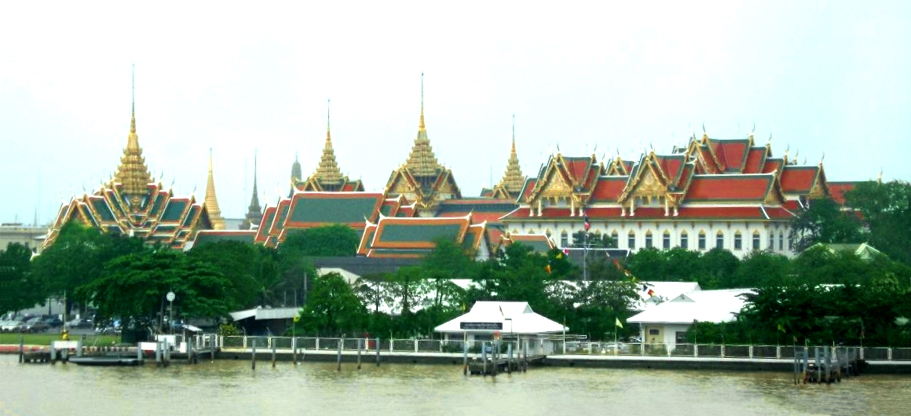
Mda, public domain; river-facing Palace context PR32 before 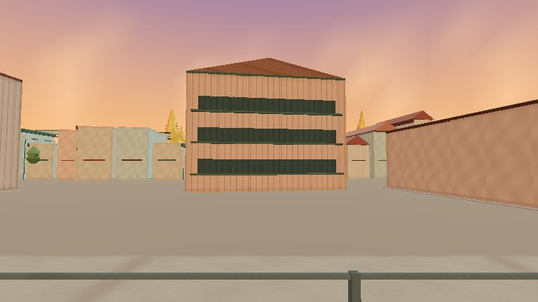
Actual unchanged-main WebGL PR33 after 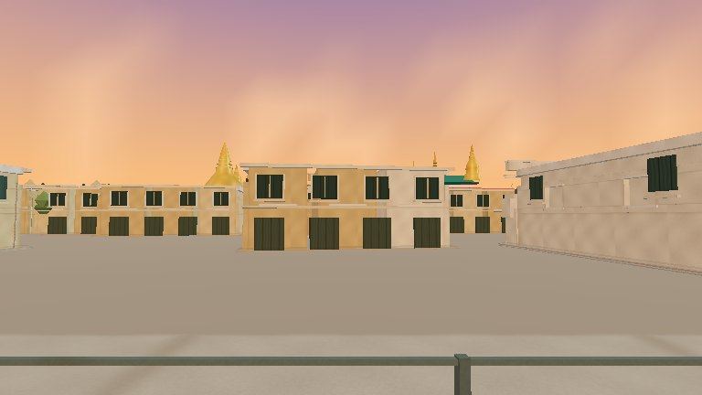
Actual new WebGL Elevated before PR32 inspection camera Elevated after PR33 inspection camera Normal driving before Unmodified PR32 chase camera Normal driving after Unmodified PR33 chase camera Night after Actual sunset/night-cycle WebGL tha-tien Real photograph 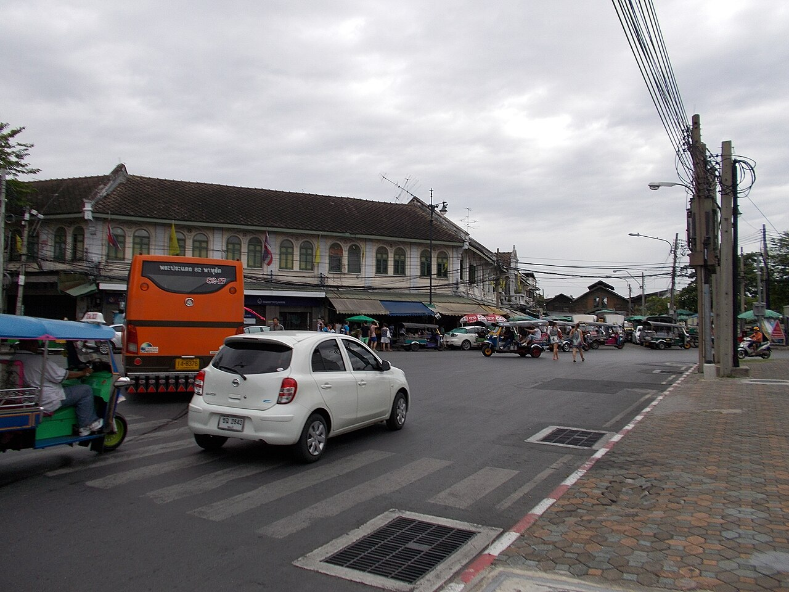
Weerayas, CC BY-SA 3.0; street-facing heritage blocks PR32 before 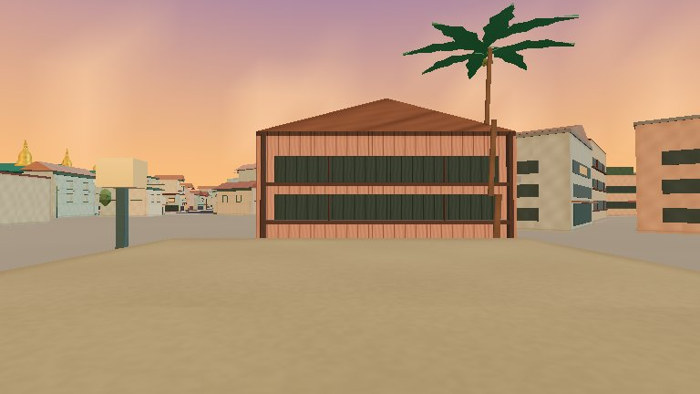
Actual unchanged-main WebGL PR33 after 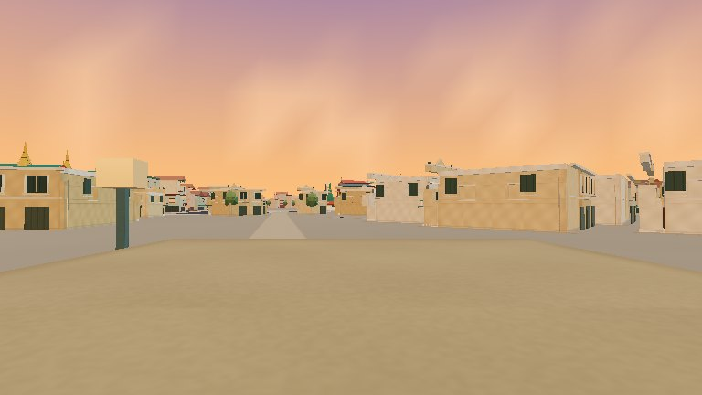
Actual new WebGL Elevated before PR32 inspection camera Elevated after PR33 inspection camera Normal driving before Unmodified PR32 chase camera Normal driving after Unmodified PR33 chase camera Night after Actual sunset/night-cycle WebGL democracy Real photograph 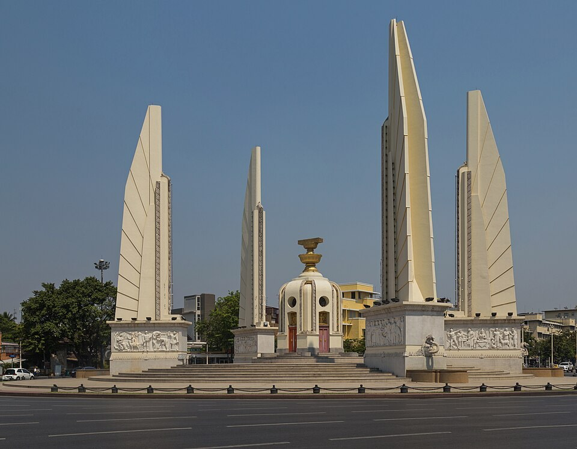
Marcin Konsek, CC BY-SA 4.0 PR32 before Actual unchanged-main WebGL PR33 after 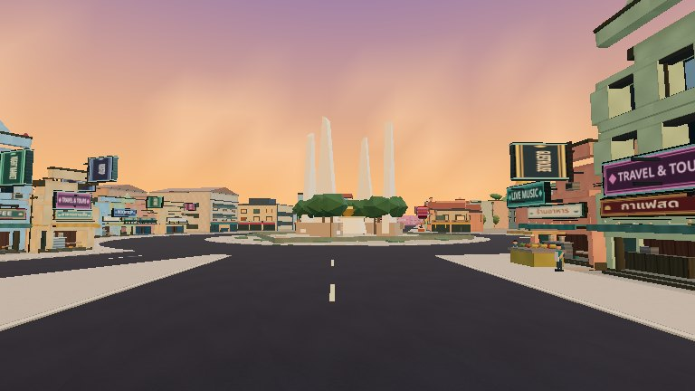
Actual new WebGL Elevated before 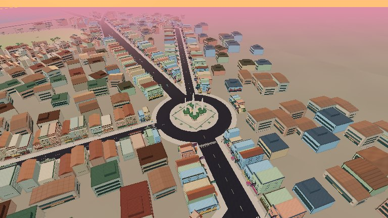
PR32 inspection camera Elevated after 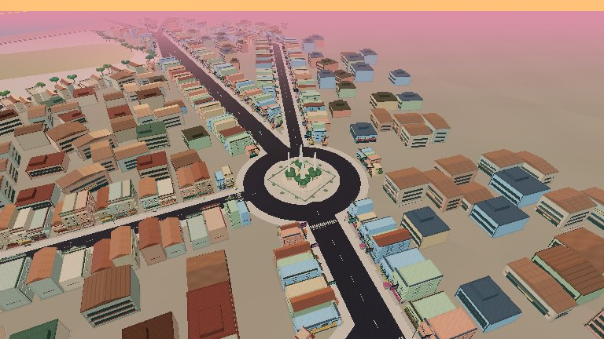
PR33 inspection camera Normal driving before Unmodified PR32 chase camera Normal driving after 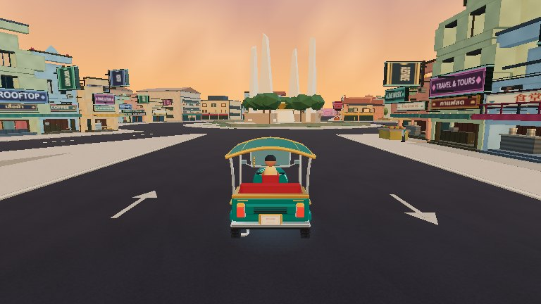
Unmodified PR33 chase camera Night after 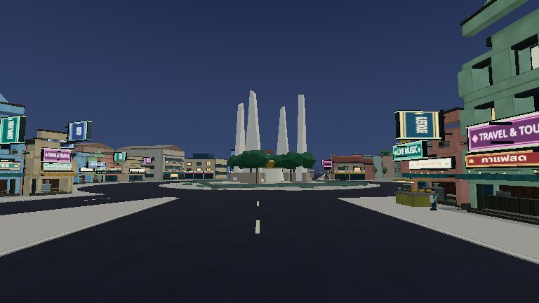
Actual sunset/night-cycle WebGL sanam Real photograph 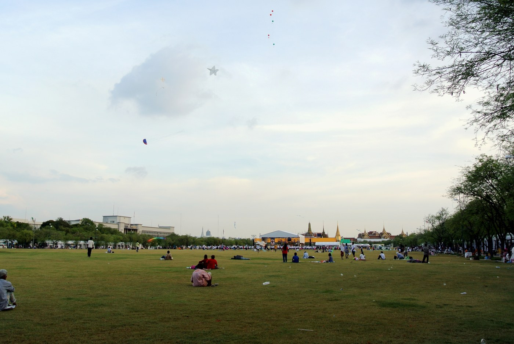
Adbar, CC BY-SA 3.0 PR32 before 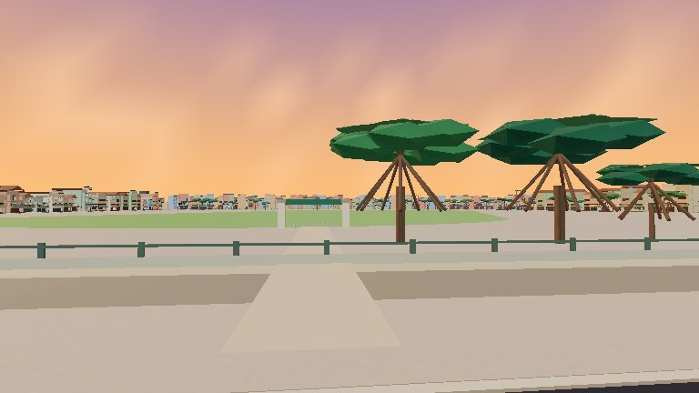
Actual unchanged-main WebGL PR33 after Actual new WebGL Elevated before PR32 inspection camera Elevated after PR33 inspection camera Normal driving before Unmodified PR32 chase camera Normal driving after Unmodified PR33 chase camera Night after Actual sunset/night-cycle WebGL hua Real photograph KarlDubost, CC BY-SA 3.0 PR32 before Actual unchanged-main WebGL PR33 after Actual new WebGL Elevated before PR32 inspection camera Elevated after PR33 inspection camera Normal driving before Unmodified PR32 chase camera Normal driving after Unmodified PR33 chase camera Night after Actual sunset/night-cycle WebGL gate Real photograph Marcin Konsek, CC BY-SA 4.0 PR32 before Actual unchanged-main WebGL PR33 after Actual new WebGL Elevated before PR32 inspection camera Elevated after PR33 inspection camera Normal driving before Unmodified PR32 chase camera Normal driving after Unmodified PR33 chase camera Night after Actual sunset/night-cycle WebGL  Actual unchanged-main WebGL
Actual unchanged-main WebGL